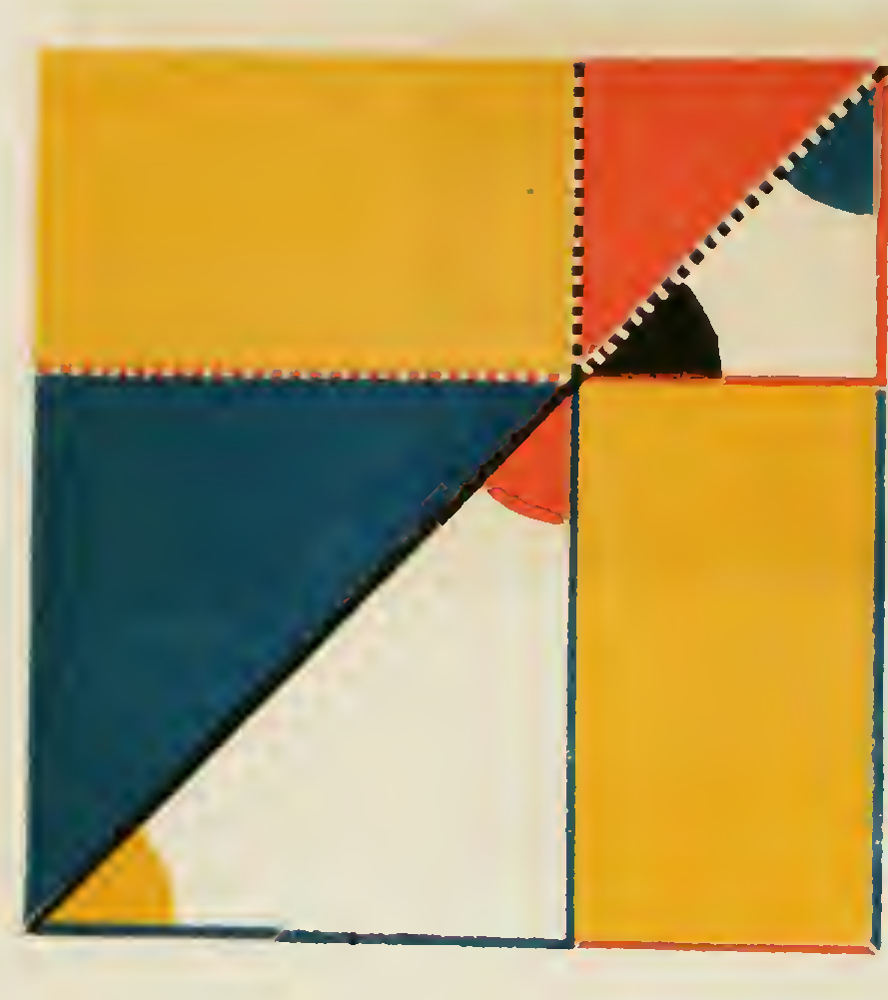

Proposition II.4 — Binomial Square¶
Book II, Proposition IV. Theorem (Pickering p. 56 · G.147)
If a straight line be divided into any two parts ( and ), the square on the whole line is equal to the squares on the two parts, together with twice the rectangle contained by the parts.


Construction. Describe the square on the whole line ([I.46]), draw diagonal + ([I.post.1]), and through the division point draw parallels partitioning the square into four sub-regions ([I.31]).
Demonstration (:just:`I.29`, :just:`I.6`, :just:`I.34`, :just:`I.43`).
Along diagonal + , isosceles base-angle transfer ([I.29], [I.6]) proves that the two parallelograms about the diameter are equilateral right-angled squares:
= 2 and = 2,
while the two complements and are equal ([I.43]) and each equals × .
∴ whole square = + + 2 × . Q.E.D.
See Commentary on Proposition II.4.